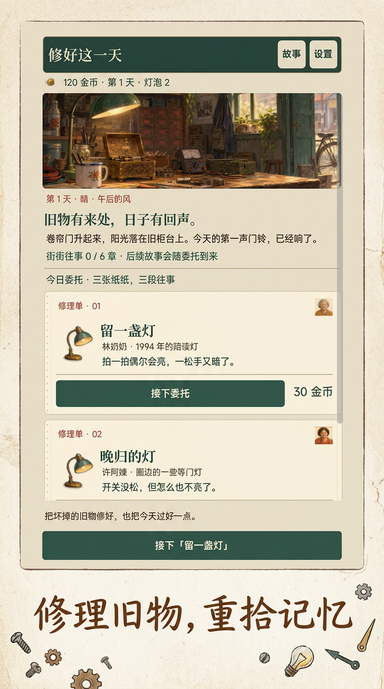

先检测，再动手
委托先交代旧物和故障，桌面流程接着拆成检测、维修、组装、测试和交付。零件装好还有一次检查，可以确认旧物确实恢复工作。
TAPTAP MAKER / 个人 AI 游戏实践
旧物修理 / 轻经营 / 叙事益智
街坊送来一只不响的音乐盒。先找到故障，把零件装回去，再听它重新响起来。来取件的人也许会告诉你，这件旧物为什么值得修。

TapTap 公开测试 · 2026.10.25 核对
在台灯、音乐盒和风扇的委托里看症状、选工具、修好再交付。公开介绍包含 24 种委托和六位街坊的 18 章故事。营业没有倒计时，试错不扣材料，卡住时有免费提示。
展示图来自 2026.10.25 核对的 TapTap 公开游戏页展示图；保留原图，部分含商店宣传文案，不冒充本次重新运行游戏的实机录制。
点击图片可查看原图。

TAPTAP / 游戏入口
打开 TapTap 游戏页，看看街坊今天送来了什么。